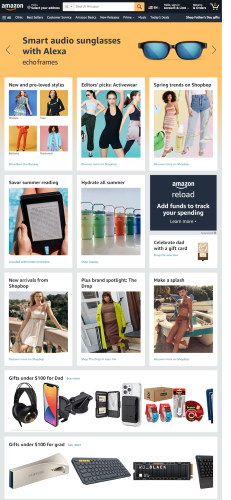

White Space
Etsy
Etsy linkI think this is a good example of white space because there is enough room around all components. Often times the page seems crowded with this much information on it, but these web developers have done a good job to leave space around the elements and avoid over-crowding the space.
Contrast
Amazon
Amazon Link I think Amazon uses contract in the way they use their background colors and text colors. The colors are more neutral, but they have used the contrast of dark text on a light background or vice-verse to make things pop. I also noticed that they use the color yellow for certain things, like the purchase/add to cart buttons.
Alignment
Mayo Clinic
Mayo Clinic LinkThe alignment of Mayo Clinic's webiste makes it seem stream-line and clean. It makes things more user friendly, and it makes it all look very professional. You can tell that they aren't trying to sell you anything, but trying to show you something you may need to know like research or a patient portal.